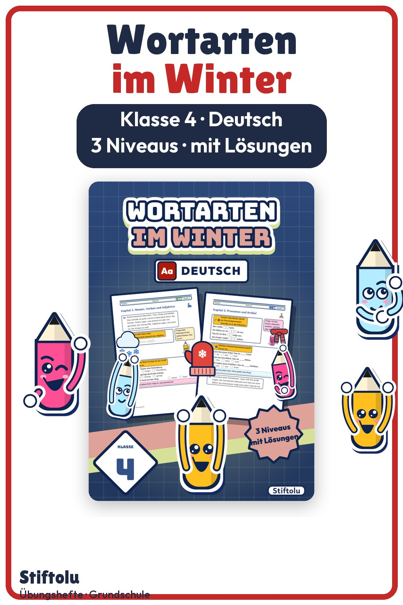

Werbung · Übungsheft von Stiftolu
Wortarten im Winter für Klasse 4 – Nomen, Verben, Artikel, Pronomen

Nomen, Verben und Adjektive per Probe bestimmen, bestimmte und unbestimmte Artikel unterscheiden, Personalpronomen einsetzen: Das ist das Programm für Klasse 4. Der Rahmen bleibt winterlich, bis zu den kurzen Wintertexten im letzten Kapitel. Dazu gehören Lösungen und eine Handreichung; die 50 Seiten sind erhältlich auf eduki.